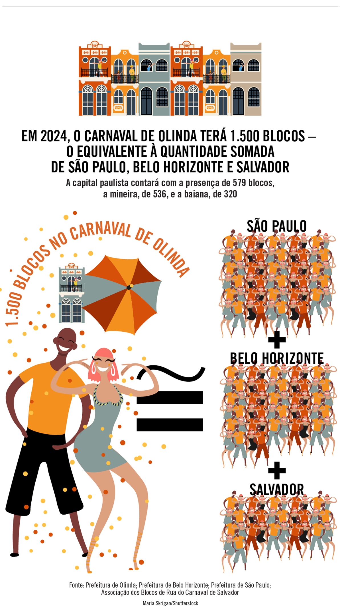

O Carnaval deste ano chega no começo do mês, de 10 a 13 de fevereiro, mas é só olhar para o lado para constatar que já começou. O =igualdades desta semana faz um raio-X dos números da festa pelo Brasil: da capital mineira, que se tornou um destino em ascensão para a folia, até os camarotes Sapucaí.
Para aproveitar os cinco dias de festividade no Nosso Camarote, um dos mais disputados da Marquês de Sapucaí, o local dos desfiles do Rio de Janeiro, o folião desembolsa aproximadamente dez salários mínimos. Em 2024, o terceiro lote do pacote masculino para o evento no espaço fechado atinge o valor de R$ 15.705, onze vezes o salário mínimo brasileiro, de R$ 1.412.
Um dos destinos tradicionais da folia, Olinda espera a participação de 1.500 blocos oficiais desfilando pelas suas ruas. O número equipara-se à soma dos blocos das cidades de São Paulo, Belo Horizonte e Salvador. Em São Paulo, os festejos contarão com 579 blocos, enquanto na capital mineira serão 536 e em Salvador, 320. Já em relação aos cortejos pelas ruas, que podem ter um bloco se apresentando mais de uma vez durante a folia, a capital paulista supera o Rio de Janeiro em quantidade: há 637 desfiles oficiais confirmados contra 453 eventos planejados na cidade fluminense.
Belo Horizonte surge como um novo ponto do Carnaval brasileiro, revelando um expressivo crescimento de público nos últimos anos. Em 2013, a capital mineira contava com 500 mil foliões; dez anos depois, esse número saltou para 5,2 milhões, um aumento superior a 900%. De 2016 para 2024, o número de blocos oficiais na cidade passou de 247 para 536.
No Carnaval carioca, a Portela se destaca como a escola com o maior número de títulos na Sapucaí, acumulando 22 conquistas, seguida pela Mangueira, com 20, e pela Beija-Flor, com 14. Outras agremiações, como Salgueiro, Império Serrano, Imperatriz Leopoldinense e Mocidade Independente de Padre Miguel, também têm um histórico de conquistas expressivas, alcançando o primeiro lugar mais de cinco vezes ao longo de suas participações na competição que existe desde 1932.

No Carnaval de 2023, Salvador recebeu 1 milhão de turistas, o equivalente à população total de Maceió, estimada em 958 mil habitantes.
No Carnaval do ano passado foram recolhidas 1.067 toneladas de lixo no Rio de Janeiro e 694 toneladas, em São Paulo. Considerando a média nacional de 343 kg de resíduos sólidos produzidos individualmente em doze meses, é como se mais de 5 mil pessoas tivessem descartado, durante a folia, todo o lixo que produzem em um ano.
Os paulistanos que decidem curtir o Carnaval em São Paulo desembolsam, em média R$ 102 para aproveitar as festividades. Já os estrangeiros desembolsaram 23 vezes esse valor, em uma média de R$ 2.337.